Mac, lean
Lean Mac.
Lean Dock.
Lean menu bar.
Maclean keeps your Mac lean two ways: it clears out what you don't need, and it replaces the small utilities you've collected with one quiet app. Fewer files, fewer apps, fewer icons in your menu bar.
macOS 14 Sonoma or later · Apple silicon and Intel · First launch: allow it once
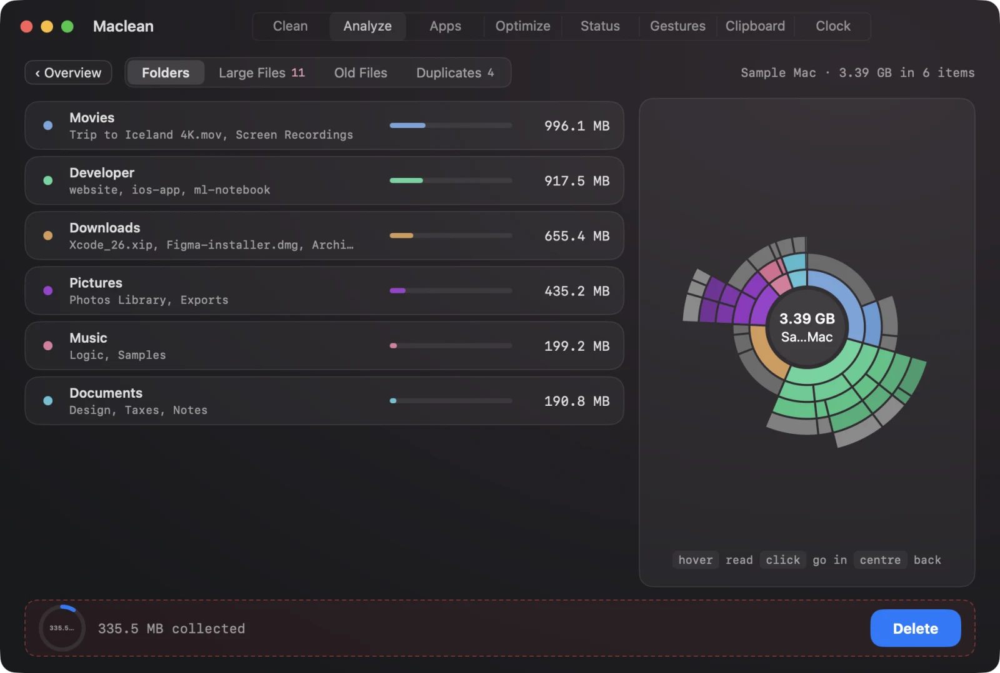
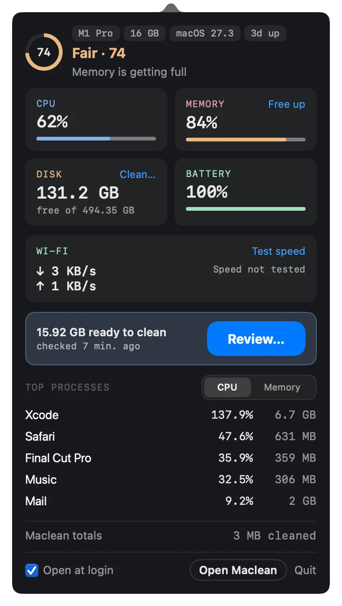
Lean on apps: one app instead of
Clean · ⌘1
Find what can go, and see why.
Check Now walks your developer tools, browsers, app caches, logs, installers and leftovers of removed apps, and fills a ring as it finds space. Then you review every item before anything moves.
- Each item says what it is and why it is safe: Safe, Opt-in or Review.
- Safe items come ticked; your choices are remembered for next time.
- An app is open? Quit and include it, only if you say so.
- Everything goes to the Trash, so a clean can be undone.
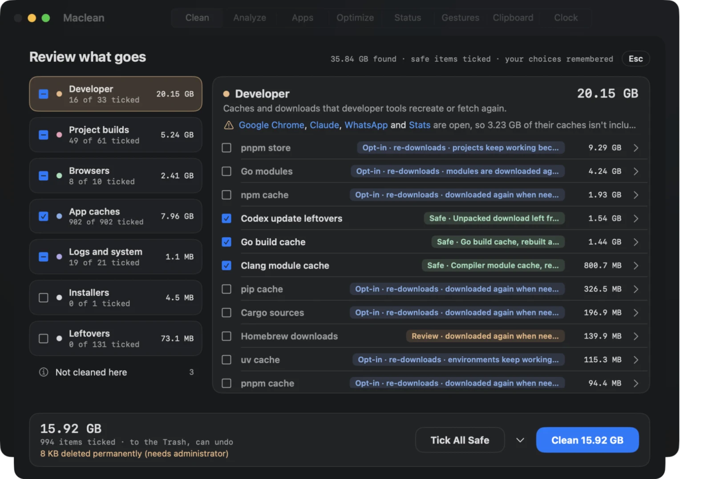
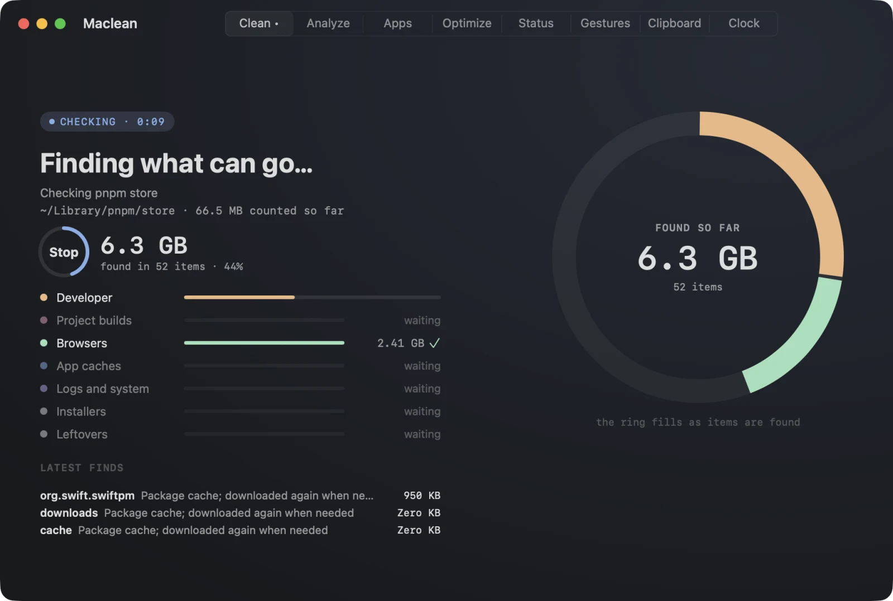
Analyze · ⌘2
See exactly where your space went.
Map a whole disk or any folder. The inner ring is the top level and every ring out is one folder deeper: click to go in, the centre to come back.
- Collect what you don't need and watch folders shrink before anything is deleted.
- Delete runs behind a 5-second countdown you can cancel.
- Preview any file first, in its own window.
- Hard links and APFS clones are counted once.
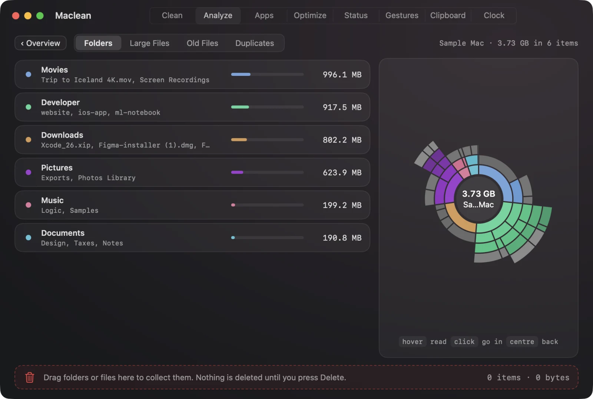
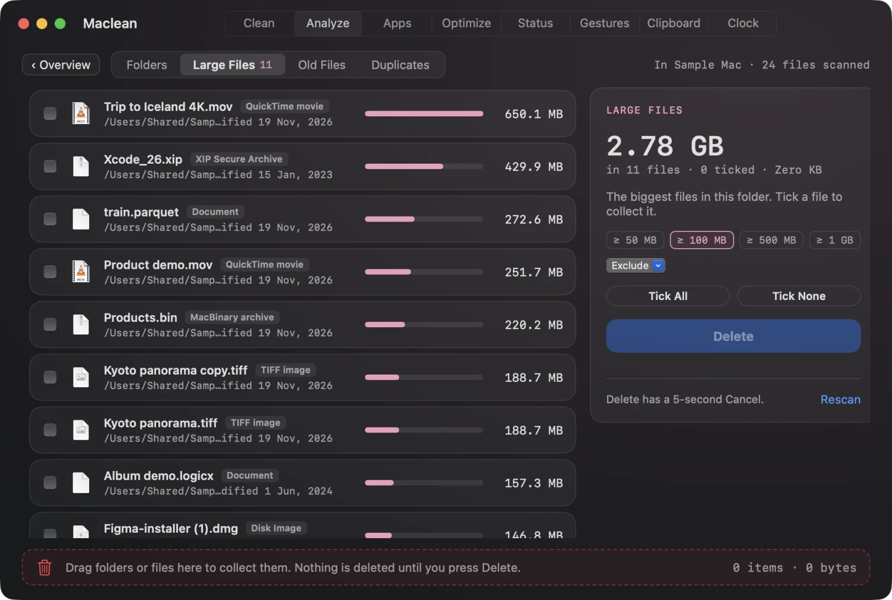
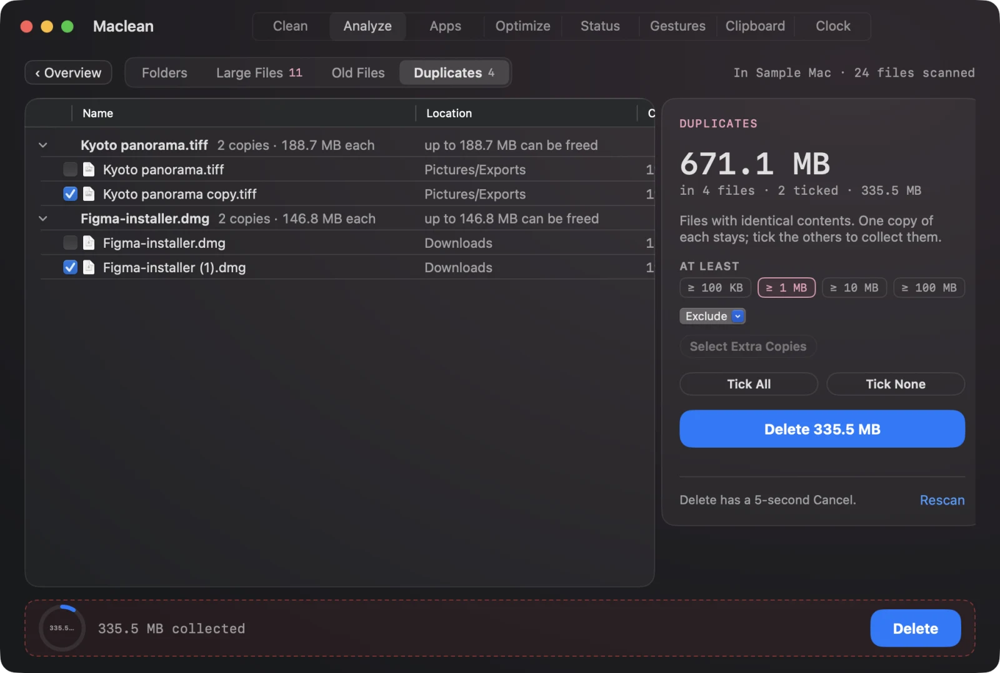
Apps · ⌘3
Uninstall apps with everything they leave behind.
Every app with its size and when you last used it, sorted into active, recent and unused. Tick some and review each cache, preference and support file before anything is removed.
- See how much removing your unused apps would free.
- Filter by unused, Intel-only or larger than 1 GB.
- Updates and Startup tabs: see how each app updates, and switch login items on or off.
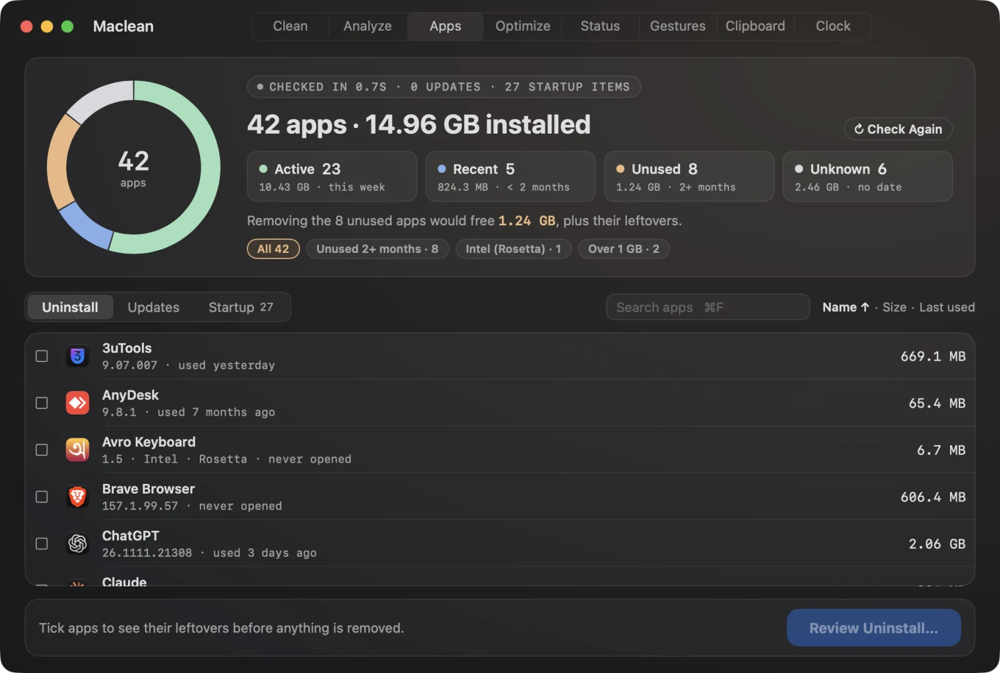
Optimize · ⌘4
Maintenance, with the details first.
Seventeen tasks, from checking the Spotlight index to rebuilding Launch Services and compacting Mail and Safari databases. Each row says what it fixes and what it touches.
- Checks that change nothing are kept apart from tasks that do.
- Tasks that need your password, or a closer look, say so up front.
- A live CPU, memory, swap and load readout while they run.
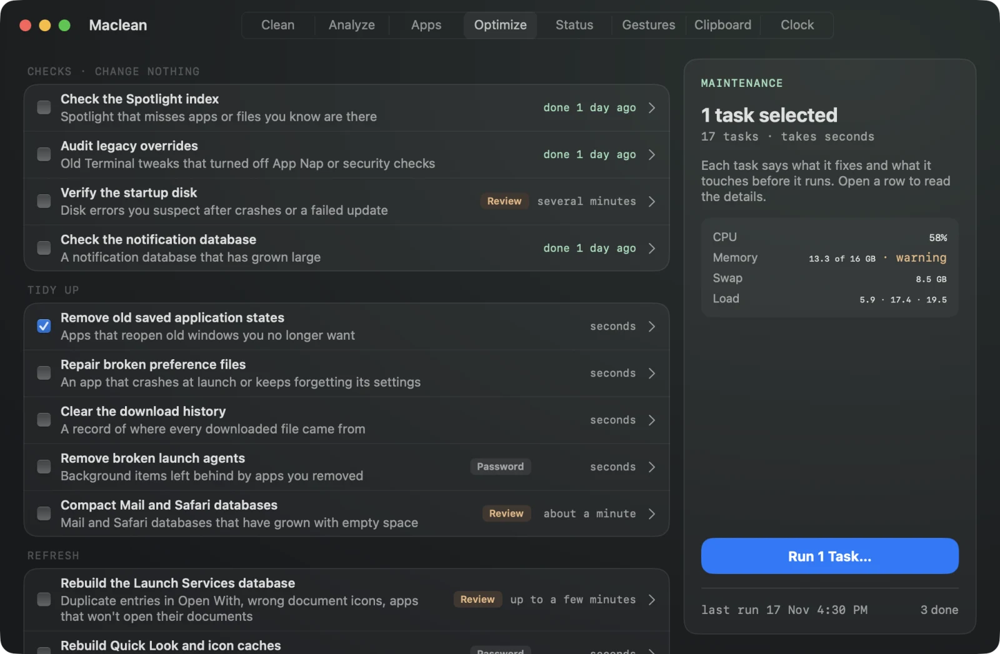
Status · ⌘5
Your Mac at a glance.
A health score with what affects it, plus CPU, GPU, memory, battery, disk, network and fans, each with a short history. Below, every process, sortable and searchable, with energy impact.
- Free up memory from the memory tile, no password needed.
- Test your connection speed, only when you ask.
- Quit a runaway process without opening Activity Monitor.
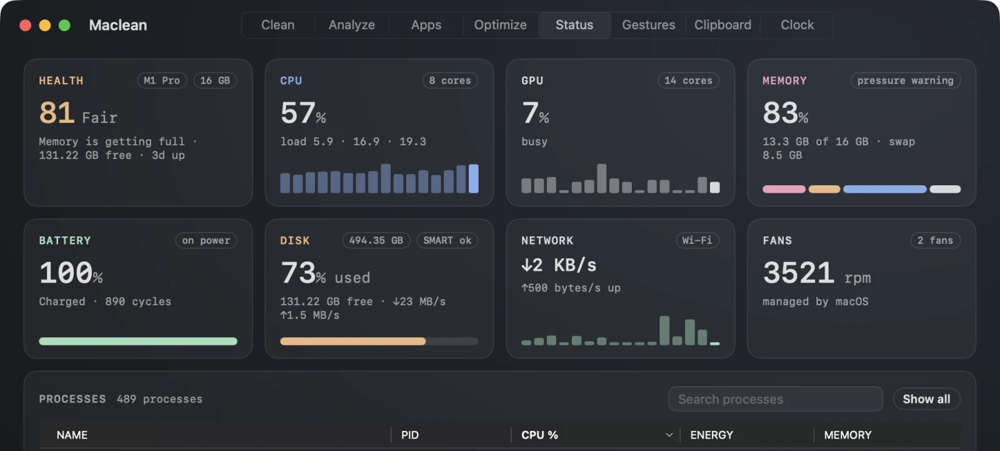
Fewer apps · off until you turn them on
Fewer apps, not fewer features.
Each one replaces an app you would otherwise install and keep updating. Turn on only what you want; while off they do no work at all: no polling, no menu bar icon, no hotkey.
Gestures · ⌘6
Your trackpad's edges are controls.
Slide along the right edge for volume and the left for brightness. The top and bottom edges can switch apps, scrub video, set the keyboard backlight or control media. Normal clicks and scrolling are untouched.
- Brightness can drive external displays too, on Apple silicon.
- Swap the sides, or pause gestures in chosen apps.
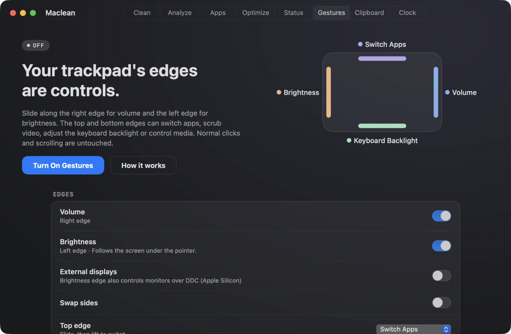
Clipboard · ⌘7
Everything you copy, saved and sorted.
Text, code, links, files, images and colours land in their own columns, with a History column for all of it. Open the panel with ⌃Space or from the menu bar, then click to paste.
- Search, pins, and colours you can paste in 11 formats.
- Code is detected and highlighted; links show their page title.
- Passwords and API keys are skipped, and you can pause copying.
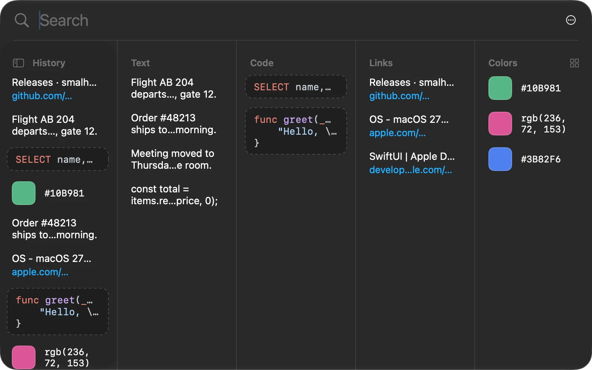
Clock · ⌘8
Time, date, battery and Wi‑Fi in one small item.
The date sits under the time, so the clock takes about half the width, with a battery bar and Wi‑Fi dots beside it. A short guide shows how to hide Apple's own icons and ticks each step as you do it.
- 12 or 24 hour, date styles or your own pattern, fonts and spacing.
- A bolt in the battery while it charges; dots turn orange without internet.
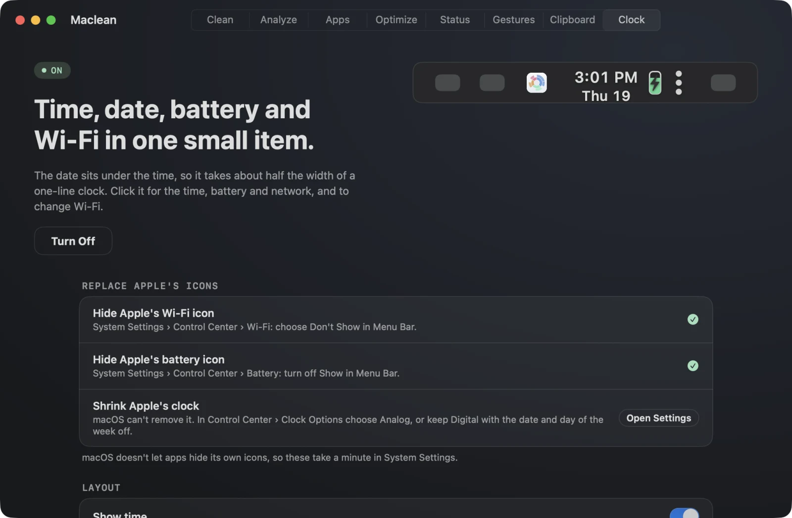
Built to be trusted with your Mac.
Careful by design
Nothing is deleted without a review, a countdown and a last check. System folders, keychains, Mail, Messages and Photos can never be removed.
Private
No analytics, no accounts, no tracking. The speed test and online update checks only run when you ask.
Native and light
Written in Swift for macOS, light and dark aware, keyboard friendly from ⌘1 to ⌘8.
One app to keep current
Free, with no trial or upsell. One signed update keeps every tool current, installed from inside the app.
Homebrew
Install from the terminal
Update later with brew upgrade --cask maclean. Also installs the maclean-scan command.
Disk image
Download and drag
1. Download the latest .dmg and open it.
2. Drag Maclean onto Applications, then eject the disk image.
3. Open Maclean from Applications.
First launch: allow it once
Maclean isn't notarized by Apple, so macOS may say it can't verify it. You only do this once:
macOS 15 or later: try to open Maclean, then System Settings › Privacy & Security, scroll to Security, click Open Anyway next to Maclean, and confirm with your password.
macOS 14: right-click Maclean in Applications, choose Open, then Open again.
Terminal, any version:
macOS 14 or later · Apple silicon and Intel